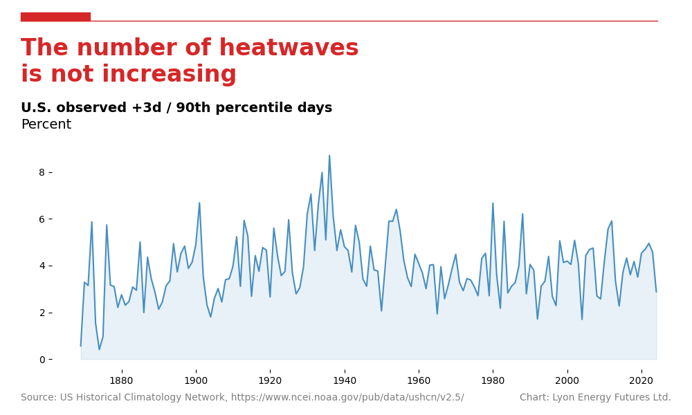

Are heatwaves increasing?
The New York Times and other sources claim that recent US heatwaves are not just a result of typical summer weather but are significantly influenced by climate change. Heatwaves are increasing frequency and intensity, they claim, and these increases are being driven by rising global temperatures. Climate change has made such extreme heat events more likely and more severe than they would have been without human impact.
So. Are heatwaves increasing in the US?
In this analysis, we define a heatwave as a period of at least 3 consecutive days where the temperature at a station is above 90th percentile of temperatures at that location. We then count the number of heatwave measurements per year and express it as a fraction of the total measurement in the year.
As a confounding factor control measure, we remove all stations with less than 100 years of data.
The number of heatwaves was highest in the 1930's, and has remained constant since then at around 3.5% of the total number of measurements each year.

"""
Are heatwaves increasing?
In this graph, we define heatwave as a sequence of 3 or more consecutive
days where the daily maximum temperature exceeds the 90th percentile for
that station. We then compute the percentage of heatwave days in each year.
"""
import os
from python_ushcn.utils.paths import image_path
from python_ushcn.utils.data import daily_tmax
import matplotlib.pyplot as plt
from python_ushcn.utils.plots import configure_plot
file_name = os.path.basename(__file__)
df = daily_tmax()
df["year"] = df["date"].dt.year
# Remove stations that do not have 100 years of data
# NOTE: Equates to about 32% of stations
# TODO: Check "at least 90% of daily data"?
report_counts = df.groupby("id").size()
report_counts_filtered = report_counts[report_counts >= 365 * 100]
# Compute the 90th percentile of daily maximum temperature for each station
tmax_90 = df.groupby("id")["tmax"].quantile(0.9)
# Map each station's 90th percentile temperature to its daily maximum temperatures
df["exceeds_90th"] = df.groupby("id")["tmax"].transform(lambda x: x > tmax_90[x.name])
# Identify sequences of 3 or more consecutive days exceeding the 90th percentile
heatwave_series = (
df.groupby("id")["exceeds_90th"]
.rolling(window=3)
.sum()
.reset_index(level=0, drop=True)
)
df["heatwave"] = heatwave_series >= 3
# Filter rows where 'heatwave' is True, indicating at least 3 consecutive days above the 90th percentile
heatwave_events = df[df["heatwave"]]
# Compute the percentage of heatwave days in each year
year_count = df.groupby("year").size()
heatwave_year_count = heatwave_events.groupby("year").size()
heatwave_pcnt = 100 * heatwave_year_count / year_count
# Convert to DataFrame and reset index for plotting
heatwave_pcnt_df = heatwave_pcnt.reset_index(name="count")
print(heatwave_pcnt_df.tail())
# Plotting
title = "The number of heatwaves \nis not increasing"
subtitle = "U.S. observed +3d / 90th percentile days"
axis_label = "Percent"
source = "Source: US Historical Climatology Network, https://www.ncei.noaa.gov/pub/data/ushcn/v2.5/"
fig, ax = configure_plot(title, subtitle, axis_label, source)
plt.plot(
heatwave_pcnt_df["year"],
heatwave_pcnt_df["count"],
color="tab:blue",
alpha=0.8,
)
plt.fill_between(
heatwave_pcnt_df["year"],
heatwave_pcnt_df["count"],
0,
color="tab:blue",
alpha=0.1,
)
# Save
image_path = image_path(file_name)
plt.savefig(image_path)
# export to csv
df.to_csv("are_heatwaves_increasing.csv")